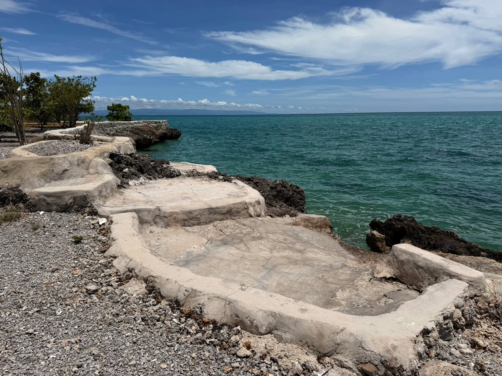
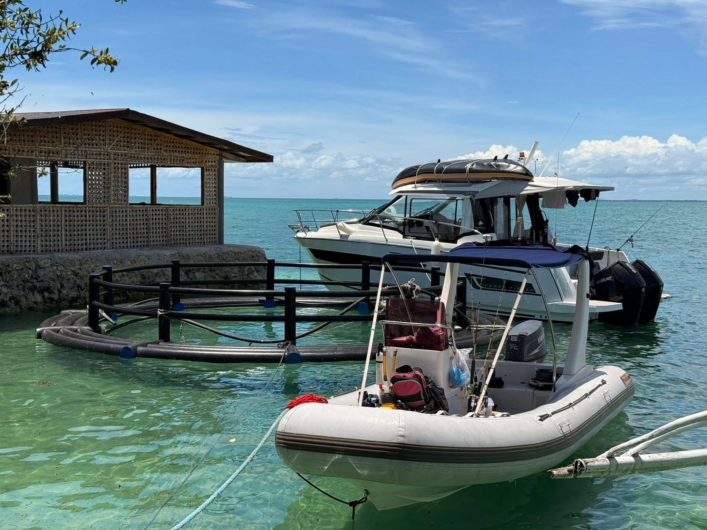
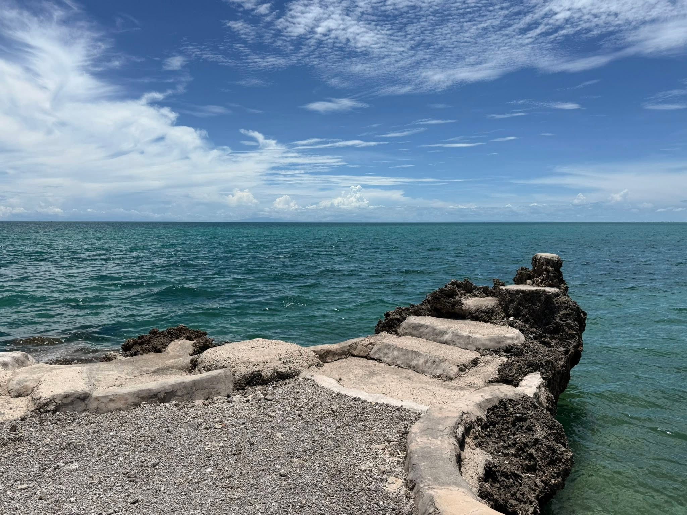
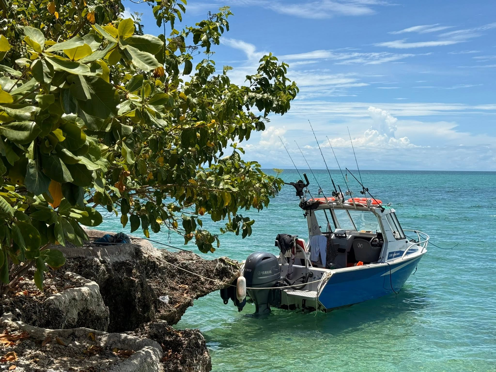
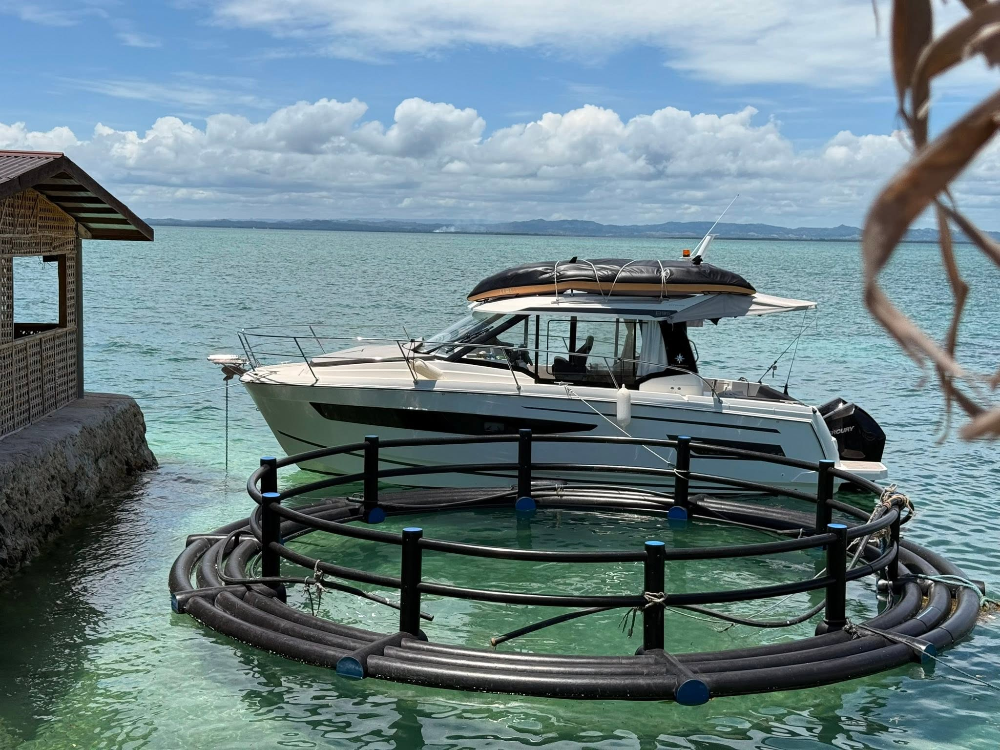
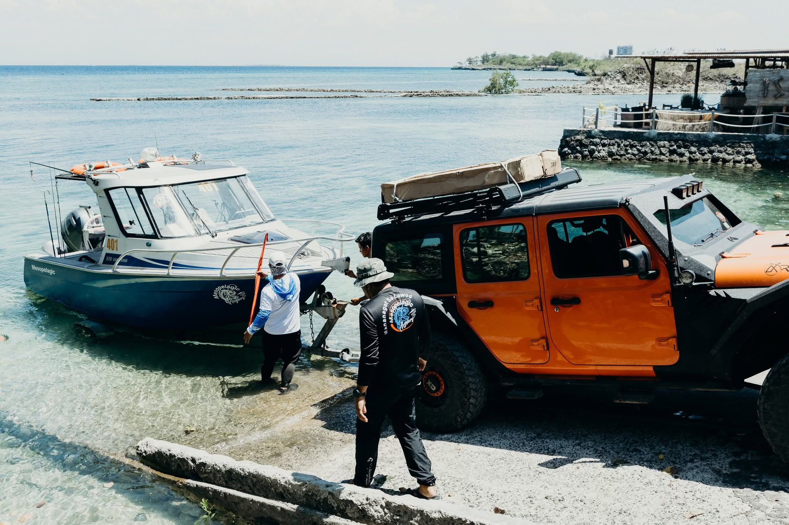
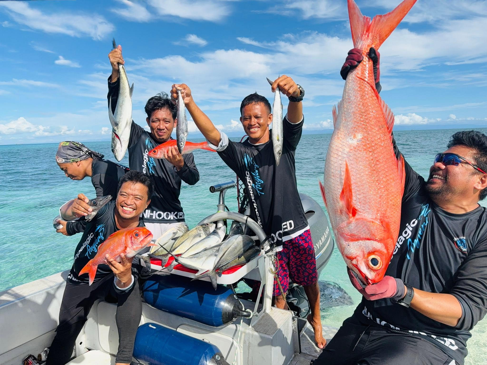
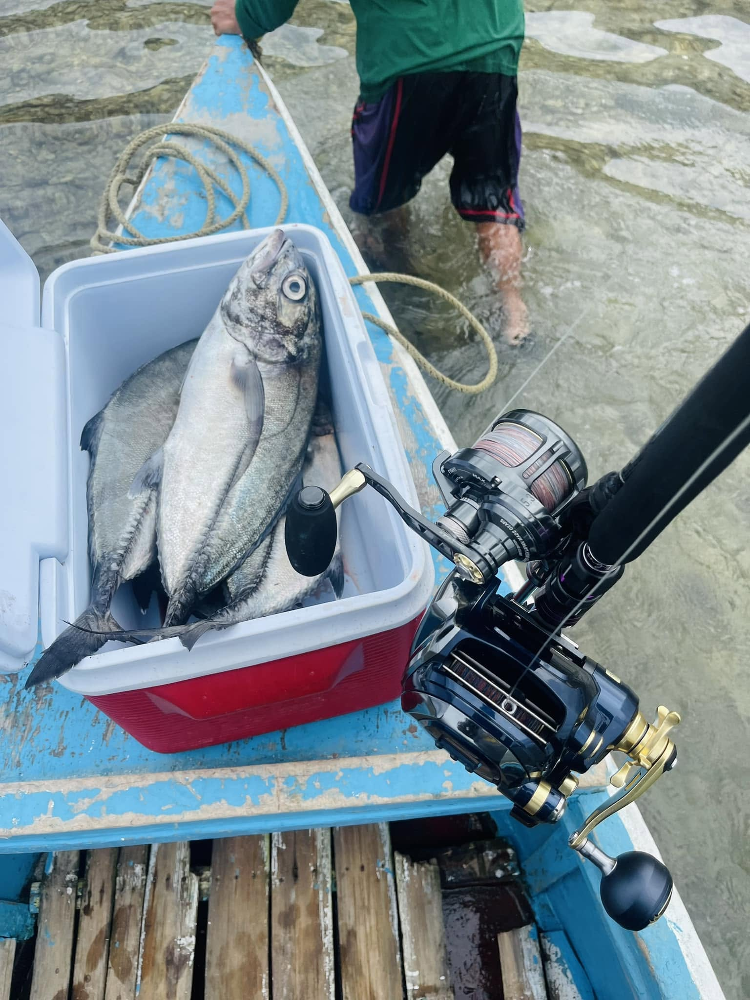

01
Where to Arrive
Guests should proceed to Hadsan Beach Park, Lapu-Lapu City, Mactan, Cebu, Philippines as the charter base of operations.
This page helps guests plan their arrival, launch-site preparation, travel timing, and basic stay arrangements before a Mesopelagic Anglers charter from Hadsan Beach Park, Mactan, Cebu.

Charters operate from Hadsan Beach Park in Lapu-Lapu City, Mactan, Cebu. Guests should plan arrival time around the selected session and allow enough time for briefing, loading, and preparation.

Guests should proceed to Hadsan Beach Park, Lapu-Lapu City, Mactan, Cebu, Philippines as the charter base of operations.

Arrive earlier than the departure time so the crew can brief guests, organize gear, load provisions, and prepare the vessel.

Prepare meals, snacks, drinks, sun protection, non-slip footwear, light layers, medication, and waterproof storage.
Use this guide to prepare your arrival, food, accommodation, parking, meeting point, and post-trip plans before heading offshore with Mesopelagic Anglers.

For the 5:00 AM Morning Session or the 12-hour Nocturnal Session, guests may stay near Hadsan Beach Park to reduce travel fatigue and avoid early-morning delays.

Meet the captain and deckhand at the Hadsan boat ramp before your session. This gives the crew time for briefing, loading, gear checks, and final preparation.

Pack meals, snacks, water, sports drinks, and preferred beverages. The charter provides cooler and ice support, but guests should bring their own provisions.

Hadsan Beach Park has convenient food, coffee, and dining options nearby. Guests may use these before boarding or after returning from the charter.

Use “Hadsan Beach Park, Lapu-Lapu City” as your navigation destination. Guests should prepare transport and parking arrangements before the session.

If guests plan to keep their catch, prepare containers or transport plans after docking. This is especially useful for longer sessions or larger catches.
Review your selected session time before arranging transportation or accommodation. For questions about arrival timing, launch-site expectations, or session preparation, send your inquiry before the charter.